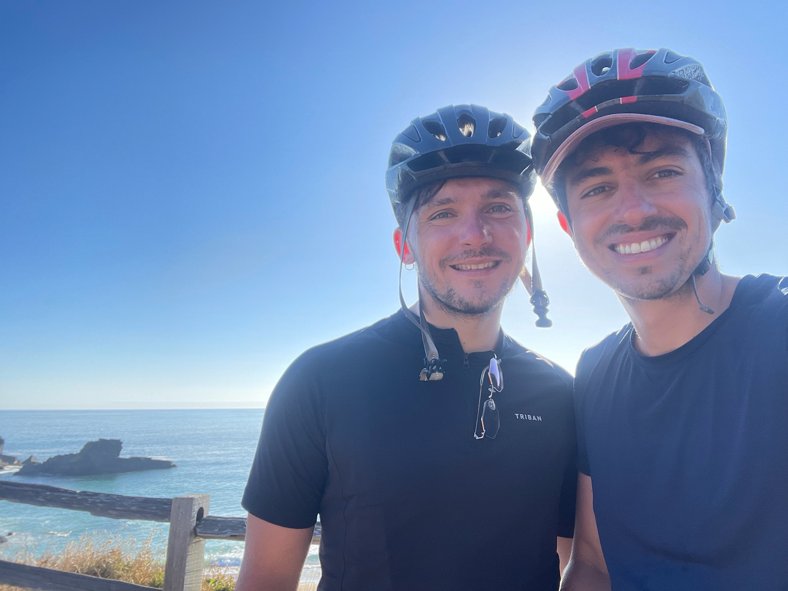
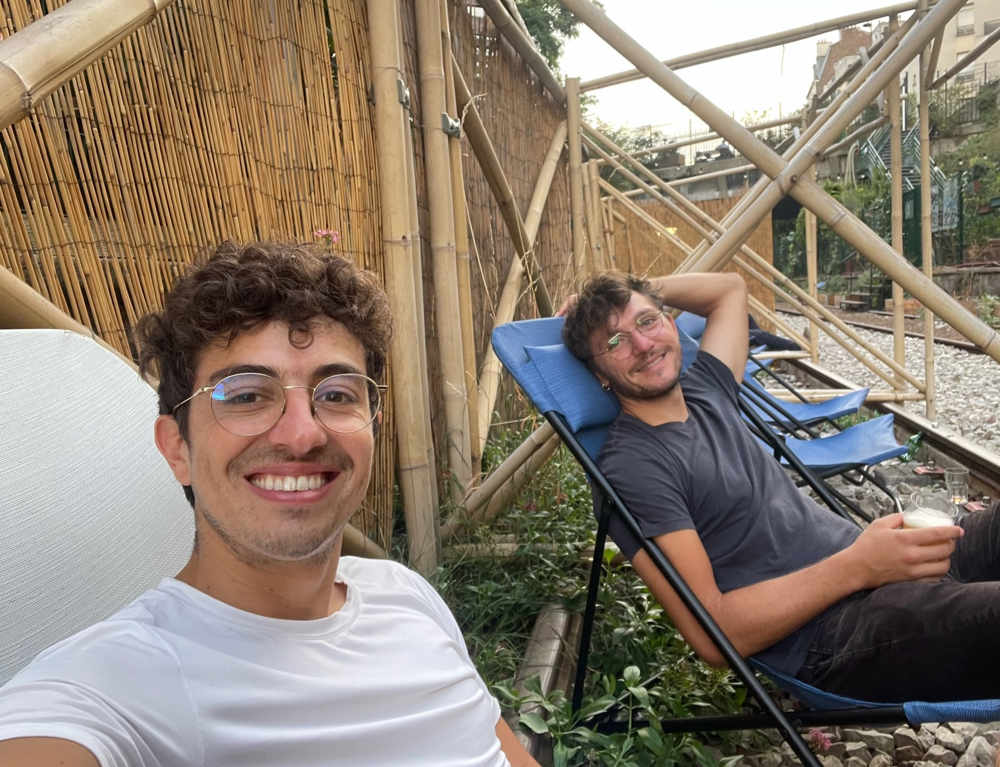
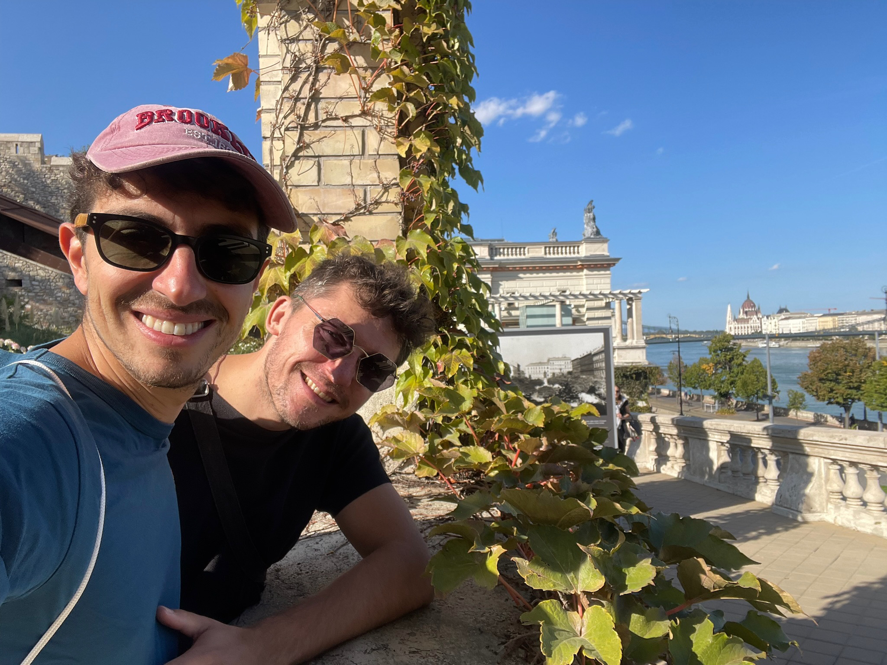

Notre histoire
Comment tout a commencé
« Nous pouvons vraiment dire que nous avons traversé un océan l'un pour l'autre. »
Notre histoire commence par une chaude journée de juin 2019, avec l'odeur du chlore dans l'air — au bord d'une piscine lors d'une compétition internationale de natation LGBT, à Flushing, Queens. Daniel s'est approché de Nick avec une accroche inspirée, lui demandant s'il pouvait prendre une photo avec « New York » (le logo de son équipe, les New York Front Runners, imprimé sur son maillot). Ce qui a rapidement débouché sur des verres et un dîner, puis une romance transatlantique à longue distance — qui a duré neuf petits mois… avant qu'une pandémie mondiale commence à fermer les frontières internationales.
À l'annonce de la fermeture de la frontière américaine, Daniel a dû prendre une décision éclair. Pourrait-il rejoindre les États-Unis avant la fermeture définitive ? Direction l'aéroport sans tarder — il a réussi à monter dans l'un des derniers vols au départ de France — et nous avons pu traverser ensemble le début de la pandémie dans un petit appartement à Brooklyn.
Passer de la longue distance au confinement new-yorkais ensemble s'est avéré étonnamment simple. Nous avons trouvé notre rythme : des joggings autour de Prospect Park, des pique-niques socialement distanciés avec des amis, des vendredis bagels chez notre boulanger du coin — et surtout, enfin, être dans la même ville.
Mais au fil de 2020, il est devenu évident que Daniel ne pourrait pas renouveler son visa. Avec des règles qui changeaient sans cesse et la frontière française toujours techniquement fermée, Nick s'est mis à chercher une façon d'entrer en France. La seule option : un visa étudiant. Nick a donc candidaté à un seul programme de master — entièrement en français, une langue qu'il parlait à peine à l'époque. Avec une bonne dose de magie gay clairement à notre côté, l'université l'a accepté, et il s'est installé en France en août 2020.
Depuis, nous vivons à Paris, avec six années d'aventures au compteur : masters, nouveaux emplois, voyages à vélo, randonnées, explorations de toute l'Europe, les cauchemars administratifs propres aux couples internationaux — et l'achat et la rénovation de notre propre appartement à Paris.
Nous sommes tellement heureux de célébrer notre mariage entourés de notre famille internationale, et nous vous sommes infiniment reconnaissants de remplir nos vies d'autant d'amour.


